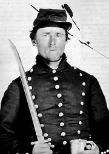

|

NAME: Thomas Thorne Parish
BORN: 1837
DIED: 1912
ALLEGIANCE: Confederate
HIGHEST RANK: Private
UNIT: 2nd Mississippi Infantry, Company A Riflemen
RECORD: Enlisted on May 1, 1862. Mustered in May 12
at Harpers Ferry, Virginia. Wounded at the First Battle of
Manassas, Virginia, on July 21. Wounded in the Second Battle
of Manassas in August 1862. Captured at Gettysburg on July
1, 1863. Confined in Forts McHenry and Delaware; exchanged
in early 1864. Rejoined Confederate army as a teamster.
Hospitalized in Richmond, Virginia, in late March 1865
because of diarrhea. Captured in the fall of Richmond on
April 3, 1865.
|
|
News of the outbreak of war filtered through the South after
Union-held Fort Sumter in South Carolina fell under Rebel
fire in April 1861. Hundreds of miles to the west, Thomas
Thorne Parish was peacefully farming his fields in northern
Mississippi when he heard the news. Like thousands of other
Southerners, the 24-year-old Parish left his wife behind and
heeded the Confederacy's call for volunteers. He would spend
the next four years of his life fighting--and suffering--for
the South.
Parish enlisted on May 1 in Colonel William C. Falkner's
2d Mississippi Infantry Regiment, Company A‹ popularly known
as the "Tishomingo Riflemen." On May 12, he and his fellow
Mississippians were mustered in at Harpers Ferry, Virginia,
as part of Georgia Colonel Francis S. Bartow's brigade in
the Army of the Shenandoah. That army was later absorbed
into the Confederate Army of the Potomac, which would
eventually become the Army of Northern Virginia.
Shown here in his neatly buttoned coat, Parish looks
eager for a fight as he holds his tin cup and brandishes his
bayonet. But Parish never had the opportunity to use his
blade; Yankee guns prevented that. Parish suffered two
wounds during the war, one at each Manassas battle in
Virginia. At the First Battle of Manassas on duly 21, 1861,
a Yankee bullet struck his arm. Parish recovered from the
wound quickly. But more than a year later, in August 1862, a
gunshot wound cost him a finger in the Second Battle of
Manassas. The amputation of the finger caused an infection
that kept Parish out of his army's Maryland Campaign. Parish
remained in the hospital as an orderly until June 1863,
rejoining his regiment just in time for its march toward
Gettysburg, Pennsylvania.
During that campaign, the 2d Mississippi served in
Brigadier General Joseph R. Davis's Brigade. On July 1, the
first day of fighting at Gettysburg, Parish and more than
half his unit were captured in the Railroad Cut by the 6th
Wisconsin Infantry. He spent his first month as a prisoner
at Fort McHenry before he was transferred to Fort Delaware.
After a prisoner exchange in early 1864, Parish rejoined
the Army of Northern Virginia as a teamster. In late March
1865, suffering from acute diarrhea, he was admitted to
Richmond's General Hospital Number 9. He remained there when
the Confederate capital fell to Federal forces on April 3,
and was captured again. After his release, Parish returned
to his wife and moved to Arkansas, remaining active in
Confederate veterans' organizations and attending several
reunions in his remaining years. He died in Nashville,
Arkansas, in 1912.
Source: Civil War Times Illustrated
36:3 (June 1997), 88.
|